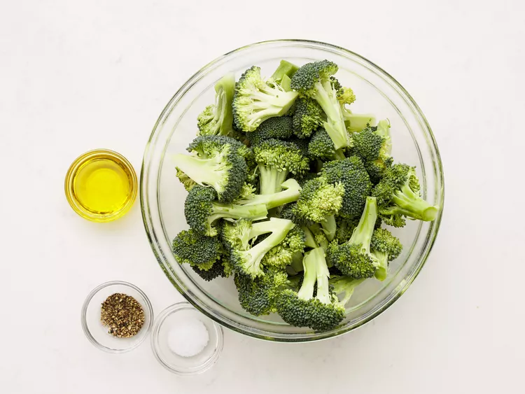
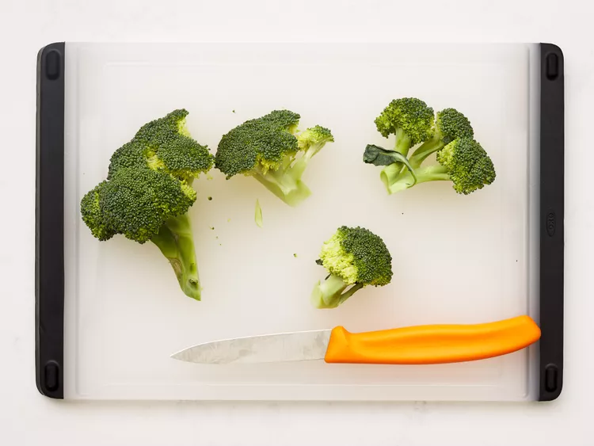
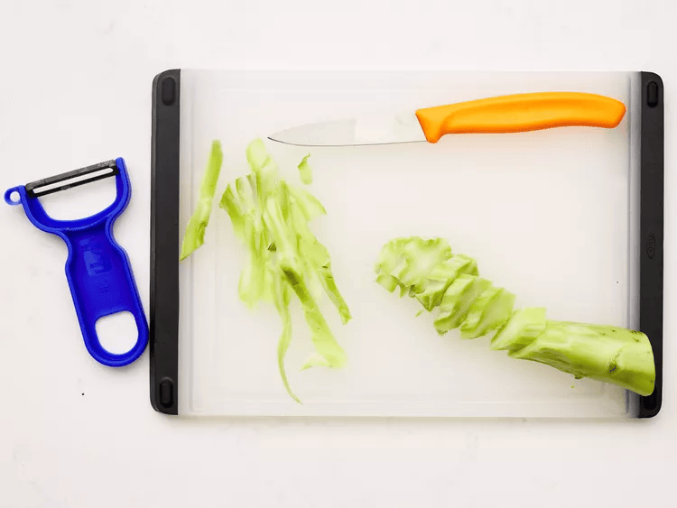
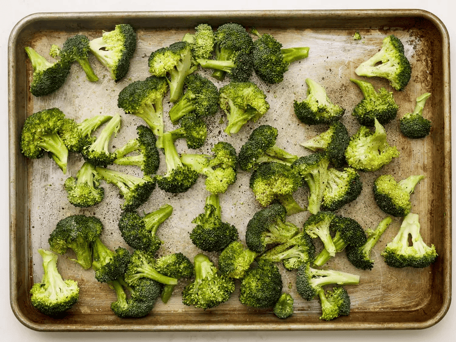
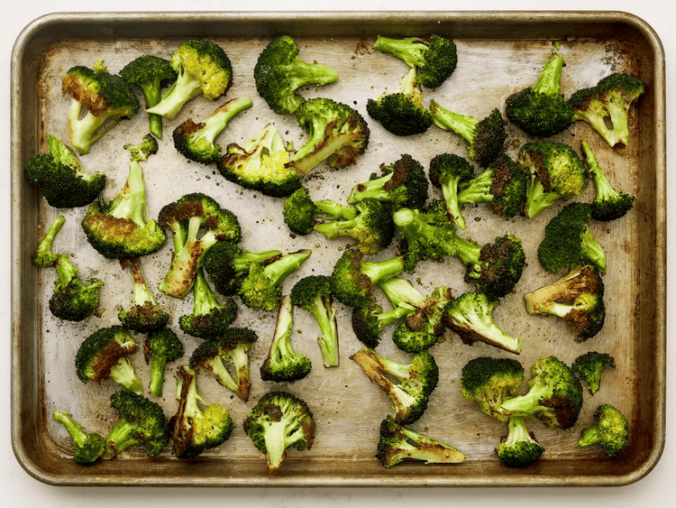
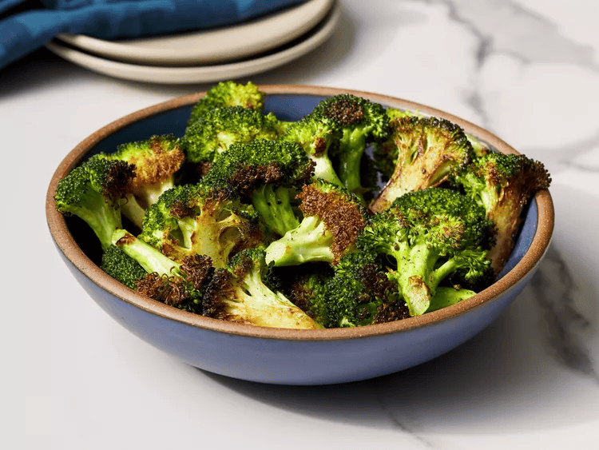

WHY YOU’LL LOVE THIS RECIPE
This easy recipe comes together fast with just broccoli, olive oil, salt, and pepper. Home cooks agree that roasting brings out a richer flavor and crisp texture. Allrecipes member France Cevallos says, “Very tasty basic recipe."
Gather all ingredients. Preheat the oven to 400 degrees F (200 degrees C).
Cut broccoli florets from the stalk.
Peel the stalk and slice into 1/4-inch slices.
Mix florets and stem pieces with olive oil in a bowl and transfer to a baking sheet; season with salt and pepper.
Roast in the preheated oven until broccoli is tender and lightly browned, about 18 to 20 minutes.
Serve & Enjoy
